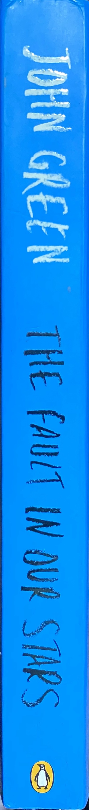
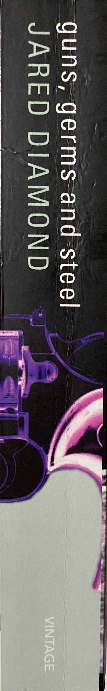
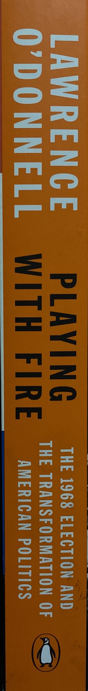
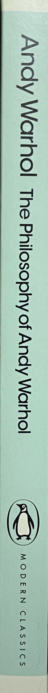
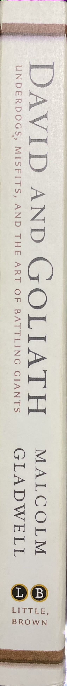

Hazel Grace Lancaster has been living with cancer for three of her seventeen years of life. Despite this, she is a girl with a vibrant mind...
Nine years later, Quentin and Margo grew apart from each other considering that they are neighbors. One night...
Know Why the Caged Bird Sings is a 1969 autobiography describing the early years of American writer and poet Maya Angelou...

Guns, Germs, and Steel: The Fates of Human Societies is a Short History of Everybody for the Last 13,000 Years...
Josh and Jamie have been through quite a bit of late. Their parents split up and both have found new partners...
The London Eye Mystery is a cross between a Sherlock Holmes adventure and a Temple Grandin autobiography...
By the River Piedra I Sat Down and Wept, a frustrated scholar looking for some greater meaning in the endless cycle of her days...
Great Expectations is full of extreme imagery – poverty, prison ships and chains, and fights to the death – and has a colourful...
Raised by a family of wolves since birth, Mowgli (Neel Sethi) must leave the only home he's ever known when the fearsome tiger Shere...
The story begins with Robin Hood, who is on his way to an archery contest, but accidentally kills one of the sheriff's officers...

The election of 1968 decided one thing: that Richard M. Nixon and not Vice President Hubert H. Humphrey would become...

The Philosophy of Andy Warhol is a nonfiction account of Andy Warhol's perspectives and opinions. Andy's topics include...
Harry Potter, an eleven-year-old orphan, discovers that he is a wizard and is invited to study at Hogwarts. Even as he escapes...
Stanley Yelnats IV is an overweight teenage boy from a poor family, whose future fortune depends on his inventor father discovering...

David is a young shepherd who gains fame first as a musician and later by killing the enemy champion Goliath. He becomes a...
New arrival Roy makes two oddball friends and a bad enemy, and joins an effort to stop construction of a pancake house...
Guinness World Records, is a reference book published annually, listing world records both of human achievements and the extremes...
An inventive and informative collection of lists, Q-and-As, and trivia, Ask Me Anything offers hilarious, hip, and hysterical...